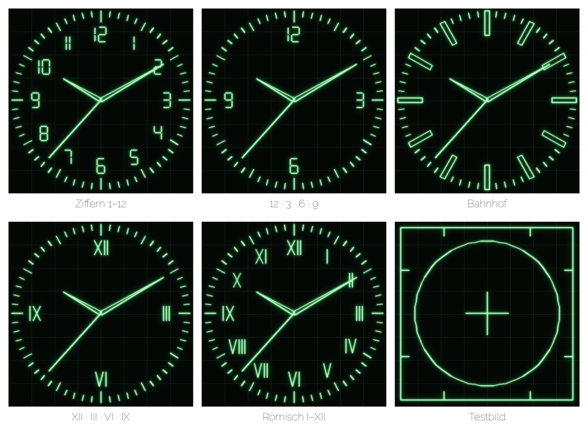
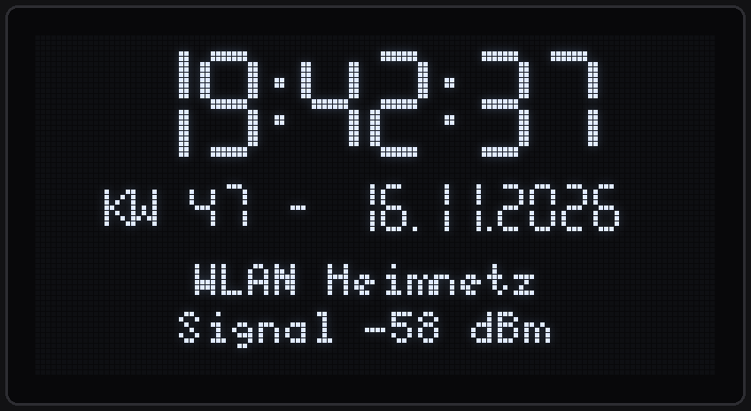
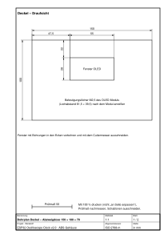

ESP32 Oscilloscope Clock v2.0
Vektoruhr für das Oszilloskop im X/Y-Betrieb
mit WLAN, Zeitserver, OLED-Anzeige und Webinterface
mit WLAN, Zeitserver, OLED-Anzeige und Webinterface
config.h, Schnittstellen, Herkunft und LizenzenDie ESP32 Oscilloscope Clock zeichnet eine analoge Uhr auf den Bildschirm eines Oszilloskops. Das Oszilloskop arbeitet dabei im X/Y-Betrieb: Zwei Spannungen lenken den Strahl waagerecht und senkrecht ab. Ein ESP32 erzeugt diese beiden Spannungen mit seinen eingebauten Digital-Analog-Wandlern (DAC) und fährt so Zifferblatt, Ziffern und Zeiger etwa 230-mal pro Sekunde nach.



Die Liste entspricht dem Aufbau des Prototyps. Die Signale verlassen das Gehäuse nicht über Einbaubuchsen, sondern über BNC-Pigtail-Leitungen, die mit Kabelverschraubungen durch die Gehäusewand geführt werden. Der BNC-Stecker am Ende kommt direkt in den Eingang des Oszilloskops, ein zusätzliches BNC-Kabel ist nicht nötig.
| Anz. | Teil | Hinweis |
|---|---|---|
| 1 | ESP32-WROOM-32U DevKitC V4 (USB-C, IPEX/U.FL-Antennenbuchse) | Klassischer ESP32 mit zwei 8-Bit-DACs an GPIO25/26. Andere ESP32-Varianten (S2, S3, C3) haben keinen bzw. andere DACs und passen nicht. |
| 1 | ESP32-Breakout-Board mit Schraubklemmen (XTVTX, „ESP32 Breakout Board Erweiterungskarte GPIO 1 in 2“, 2er-Pack) | Das DevKit wird aufgesteckt, alle Leitungen kommen in Schraubklemmen – am DevKit wird nichts gelötet. Die Klemmen sind wie die Stifte beschriftet (3V3, GND, P25, P26, P23 …). |
| 2 (3) | BNC-Pigtail-Leitung BNC-Stecker auf 2,54-mm-DuPont-Stift, RG316 (TEJIATE, „SMA to DuPont BNC/Q9/N … RG316“, Variante BNC-J to J) | X und Y; die dritte nur für die optionale Dunkeltastung (Z). Länge passend zum Abstand zum Oszilloskop wählen (30–80 cm erhältlich; 50 cm ist ein guter Wert). Rot = Innenleiter (Signal), braun = Schirm (Masse) – mit dem Durchgangsprüfer bestätigen. |
| 2 (3) | Kabelverschraubung Lapp SKINDICHT MINI M6×1, Messing vernickelt, Klemmbereich 2–3 mm, IP68 (Lapp 52001860, RS 458-3953) | Je Pigtail eine; hält und dichtet das RG316 (Ø ca. 2,5 mm) in der Gehäusewand. |
| 1 | USB-C-Einbauverlängerung USB 3.1, IP67, 0,2 m, Stecker auf Buchse, FPC-Flachbandkabel, Einbauöffnung 16 mm (Plinkwirekb) | USB-C-Buchse in der Gehäusewand; das Flachbandkabel steckt innen im DevKit. Darüber wird die Uhr versorgt und programmiert. |
| 1 | Abzweigdose ABS 150 × 100 × 70 mm, IP67, mit Scharnierdeckel, Edelstahlverschlüssen und Montageplatte (Yunseity) | Kunststoff, damit das WLAN-Signal durchkommt. Das Breakout-Board wird auf die gelochte Montageplatte geschraubt. |
| 1 | Waveshare 2,42" OLED, SSD1309, 128 × 64 Pixel | Im Auslieferungszustand (4-Wire-SPI) verwenden, nichts umlöten. |
| 1 | 2,4-GHz-Stabantenne mit SMA-Stecker + IPEX→SMA-Pigtail | Pflicht: Das Modul -32U hat keine eingebaute Antenne. |
| 2 (3) | Widerstand 220 Ω, 0,25 W (empfohlen) | In die rote Ader jedes Pigtails eingelötet; schützt die DAC-Ausgänge bei einem Kurzschluss am BNC-Stecker. |
| (1) | Elko 100 µF / 10 V | Optional: gegen leichtes Zittern bei WLAN-Sendepulsen (in die Klemmen 3V3 und GND). |
| – | Kleinteile | 7 Leitungen für das OLED (DuPont-Kabel oder Litze), Schrumpfschlauch, Abstandsbolzen M2,5 (OLED) und M3 (Breakout-Board), ggf. 2–3 Muttern M6 |
| 1 | USB-Netzteil 5 V, ≥ 1 A, mit USB-C-Kabel | Ein normales, ungeerdetes Steckernetzteil vermeidet Brummschleifen. |

| Klemme am Breakout-Board | Anschluss | Ziel |
|---|---|---|
| P25 (GPIO25, DAC1) | über 220 Ω | Pigtail „X“, rote Ader → Oszilloskop Kanal 1 |
| P26 (GPIO26, DAC2) | über 220 Ω | Pigtail „Y“, rote Ader → Oszilloskop Kanal 2 |
| P27 (GPIO27) | über 220 Ω (optional) | Pigtail „Z“, rote Ader → Z-Eingang |
| GND (linke Reihe) | direkt | braune Adern (Schirm) aller Pigtails |
| 3V3 | direkt | OLED VCC |
| GND (rechte Reihe) | direkt | OLED GND |
| P23 | direkt | OLED DIN |
| P18 | direkt | OLED CLK |
| P5 | direkt | OLED CS |
| P17 | direkt | OLED DC |
| P4 | direkt | OLED RST |
| IPEX-Buchse am Modul | Antennen-Pigtail | SMA-Buchse in der Rückwand → Antenne |
| USB-C des DevKits | Flachbandkabel | USB-C-Einbaubuchse in der Rückwand |
docs/images/bohrplan.svg mit 100 % (ohne Anpassen)
drucken und die Prüflinie nachmessen: Sie muss 50 mm lang sein. Schablonen ausschneiden und mit Klebeband auf Deckel,
Stirnseite und Rückseite kleben.

ESP32_OscilloscopeClock_v2.0/ESP32_OscilloscopeClock_v2.0.ino öffnen und hochladen.Im Projektordner pio run -t upload ausführen; das Partitionsschema ist in platformio.ini bereits eingestellt.
config.h; im Betrieb ist das Webinterface bequemer.Die Quelle der Webseite ist web/index.html. Nach Änderungen python3 tools/gen_webpage.py ausführen:
Das Skript entfernt Kommentare, komprimiert die Seite mit gzip und schreibt webpage.h (ca. 21 KB statt 80 KB im Flash).
http://192.168.4.1 aufrufen. Die Gruppe WLAN ist dann bereits aufgeklappt:
„Netze in Reichweite suchen“, eigenes Netz antippen, Passwort eingeben, „Netz speichern“.


So wird das Testbild genutzt:
Das Testbild wird nicht gespeichert. Nach jedem Einschalten erscheint es automatisch 10 Sekunden lang (BOOT_TEST_S).
| Einstellung | Wert | Grund |
|---|---|---|
| Betriebsart | X/Y | Kanal 1 lenkt waagerecht, Kanal 2 senkrecht ab |
| Kopplung | DC, beide Kanäle | Die Signale haben einen Gleichanteil (0–3,2 V) |
| Empfindlichkeit | 0,5 V/Div, beide gleich | 8 Teilungen = 4 V, das 3,2-V-Bild passt hinein |
| Position/Offset | Bildmitte, ca. −1,6 V | DAC-Mitte ≈ 1,6 V |
| Zeitbasis (digital) | 1 ms/Div | Ein Aufnahmefenster deckt ganze Uhrenbilder ab (ca. 4,3 ms je Bild) |
| Trigger (digital) | Auto | Die Uhr liefert kein Triggerereignis |
| Nachleuchten | kurz bis mittel, falls vorhanden | beruhigt den Bildaufbau |
| Bandbreitenbegrenzung | ein (z. B. 20 MHz) | weniger Rauschen |
ZBLANK_PIN 27, Polarität laut Handbuch).Aufruf über http://scope-clock.local (Name unter Einstellungen → System änderbar) oder die IP-Adresse. Die Seite ist für das Handy gemacht und lässt sich über „Zum Startbildschirm hinzufügen“ wie eine App ablegen.


Oben die Uhrzeit im 7-Segment-Stil, darunter Kalenderwoche und Datum, dann das WLAN und die Signalstärke. Ohne gültige Zeit steht dort „Keine NTP-Verbindung“, im Setup-WLAN der Netzname „ScopeClock-Setup“ und die Adresse. Helligkeit 0–100 %, Sekunden, Drehung um 180° und Pixelverschiebung gegen Einbrennen sind einstellbar.

3 Sekunden halten schaltet das Oszilloskop-Profil um (DIGITAL ↔ ANALOG). Das OLED zeigt den Wechsel mit Countdown 3, 2, 1; vorher loslassen bricht ab. Die Einstellung wird gespeichert. Nicht beim Einschalten drücken – sonst startet der ESP32 im Download-Modus.
| Gruppe | Einstellung | Bereich | Wirkung |
|---|---|---|---|
| Oszilloskop | Oszilloskop-Profil | DIGITAL / ANALOG | Art der Sprünge zwischen den Linien |
| Testbild | an / aus | Rahmen, Kreis, Mittelkreuz statt der Uhr (nicht gespeichert) | |
| Zifferblatt | 5 Stile | auch durch Wischen über die Vorschau | |
| Verweilzeit des Strahls | 1,00–10,00 µs pro Schritt | länger = hellere Linien, weniger Bilder/s | |
| Helligkeit Stunden-/Minutenzeiger | 0–100 % | Standard 67 %, wirkt dann gleich hell wie der Rest | |
| Helligkeit Minutenstriche | 0–100 % | 0 % blendet sie aus | |
| Helligkeit Ziffern | 0–100 % | 0 % blendet sie aus | |
| Rücklauf-Tempo | 0–48 | nur ANALOG: schneller = schwächere Rücklaufspur | |
| Uhrzeit | Uhrzeit stellen | Gerätezeit oder Datum/Uhrzeit | nur sichtbar ohne Zeitserver; Sommer-/Winterzeit automatisch oder fest |
| Zeitformat | 24 h / 12 h (AM/PM) | OLED und Webseite | |
| Zeitzone | Liste | inkl. Sommerzeitregel | |
| Zeitserver (NTP) | Hostname | Standard de.pool.ntp.org | |
| Display | OLED-Helligkeit | 0–100 % (0 = aus) | niedrig = langlebiger |
| Sekunden anzeigen | an / aus | HH:MM:SS oder HH:MM | |
| OLED um 180° drehen | an / aus | für ein kopfüber eingebautes Display | |
| OLED-Pixelverschiebung | an / aus | verschiebt das Bild jede Minute um wenige Pixel | |
| WLAN | Gespeicherte Netze | bis 10 | die Uhr wählt das stärkste; „Löschen“ startet neu |
| Netzsuche / Netz hinzufügen | – | stärkstes Netz oben, verbundenes markiert | |
| Neu verbinden / WLAN zurücksetzen | – | Zurücksetzen löscht alle Netze und öffnet das Setup-WLAN | |
| System | Gerätename | a–z, 0–9, Bindestrich | Adresse http://<name>.local und Name im Router |
| Einstellungen sichern / laden | JSON-Datei | alle Einstellungen außer WLANs | |
| Alle Einstellungen zurücksetzen | – | alle Gruppen, Sprache und Gerätename auf config.h; WLANs bleiben | |
| Seitenmenü | Sprache, Darstellung | Deutsch/English; automatisch/hell/dunkel | Sprache gilt auch für OLED und Debug |
| Beobachtung | Abhilfe |
|---|---|
| Kein Bild auf dem Oszilloskop | X/Y-Betrieb, DC-Kopplung, 0,5 V/Div; Position auf Bildmitte; Pigtail X an Kanal 1, Y an Kanal 2; Testbild einschalten |
| Bild gespiegelt oder gedreht | X und Y vertauscht, oder Kanal invertiert (Invert-Funktion ausschalten) |
| Bild flimmert | Verweilzeit verringern (z. B. 2,00 µs); am digitalen Oszilloskop Zeitbasis 1 ms/Div, Nachleuchten |
| Linien zu dunkel | Verweilzeit erhöhen (z. B. 5,00 µs) oder Intensität am Oszilloskop |
| Ecken verrundet, Ziffern verwaschen | Verweilzeit erhöhen |
| Kleine „Haken“ an Linienanfängen | Rücklauf-Tempo verringern (z. B. 12) |
| Rücklaufspuren sichtbar | Rücklauf-Tempo erhöhen, Profil DIGITAL probieren oder Z-Dunkeltastung |
| Kreis im Testbild oval | Empfindlichkeit von X und Y gleich einstellen (beide 0,5 V/Div, Feinregler auf „kalibriert“) |
| Brummen/Zittern im Bild | Ungeerdetes USB-Netzteil statt PC; Elko 100 µF an 3V3 |
| „Keine NTP-Verbindung“ | WLAN prüfen (Status); ohne Internet die Zeit unter Einstellungen → Uhrzeit stellen |
| Zeit um ganze Stunden falsch | Zeitzone prüfen; Sommer-/Winterzeit beim Stellen von Hand |
| http://scope-clock.local geht nicht | IP-Adresse aus dem Status oder dem Router verwenden (manche Android-Geräte unterstützen .local nicht) |
| OLED bleibt dunkel | Verdrahtung: CLK GPIO18, DIN GPIO23, CS GPIO5, DC GPIO17, RST GPIO4, VCC an 3V3; OLED-Helligkeit nicht 0 % |
| OLED-Bild 2 Pixel versetzt | in der .ino NONAME0 durch NONAME2 ersetzen |
| Hochladen schlägt fehl | Partitionsschema „Huge APP“; ggf. BOOT-Taster beim Start des Hochladens drücken |
Für eine Fehlermeldung im Debug-Bereich „Herunterladen“ antippen und die Textdatei weitergeben.

Kern 1 tut nichts anderes, als den Strahl zu führen: ohne Pause, ohne Sperren, ohne WLAN-Unterbrechungen. WLAN und Display werden auf Kern 0 gestartet, damit ihre Interrupts den Zeichenpfad nicht stören.
Gleiche Helligkeit: Die Helligkeit einer Linie hängt davon ab, wie lange der Strahl auf jedem Stück Weg verweilt. Die Firmware zerlegt jede Linie deshalb in gleich lange Schritte und hält auf jedem Schritt gleich lange (Verweilzeit). So sind waagerechte, senkrechte und schräge Linien gleich hell. Die schmalen Zeiger bekommen 67 %, weil sie sonst heller wirken.
Wenig Rücklaufspuren: Zifferblatt und Ziffern werden beim Start zu einer Rundtour mit möglichst kurzen Sprüngen sortiert. Im Profil ANALOG springt der Strahl schnell und bremst vor dem Ziel, im Profil DIGITAL springt er hart, damit ein digitales Oszilloskop unterwegs keine Abtastpunkte zeigt.
Vektordaten: Zifferblatt, Ziffern, Zeiger und Testbild sind eigene Zeichnungen, erzeugt mit tools/gen_vectors.py
(Koordinaten 0–255, 8 Bit je Achse).
Speicher: Programmspeicher 1.227.350 Byte (93 % beim Standard-Partitionsschema, ca. 39 % mit „Huge APP“), globale Variablen 74.892 Byte (22 %). Die Webseite liegt gzip-komprimiert im Flash (21 KB), die Schrift (Raleway, auf die benötigten Zeichen reduziert) als WOFF2 (30 KB).
+0s ESP32 Oscilloscope Clock v2.0 +0s [Scope] Profil: DIGITAL – BOOT-Taster 3 s halten zum Umschalten +0s [Scope] Testbild fuer 10 s +0s [Scope] Rundtour: 76 Linienzuege, Spruenge gesamt 1033 DAC-Einheiten +3s [WiFi] verbunden mit "Heimnetz", IP 192.168.1.23, RSSI -61 dBm +3s [Web] erreichbar unter http://scope-clock.local und http://192.168.1.23 +10s [Scope] Start-Testbild beendet, Uhr laeuft 21:15:06 [NTP] Sync 15.11.2026 21:15:06
config.hFast alles lässt sich im Webinterface ändern; config.h liefert nur die Startwerte bzw. feste Pins.
| Parameter | Standard | Bedeutung |
|---|---|---|
DAC_X_PIN, DAC_Y_PIN | 25, 26 | DAC-Ausgänge (fest) |
OLED_CS/DC/RST_PIN | 5, 17, 4 | OLED-Anschlüsse; CLK 18 und DIN 23 sind fest (Hardware-SPI) |
SCOPE_PROFILE | 1 | 0 = ANALOG, 1 = DIGITAL |
BEAM_NS_PER_UNIT | 3000 | Verweilzeit pro Schritt in ns (≈ 230 Bilder/s) |
JUMP_SPEED, JUMP_LANDING, JUMP_RAMP | 24, 8, 4 | Sprünge im Profil ANALOG |
ZBLANK_PIN | −1 | Dunkeltastung (27 = an), ZBLANK_ACTIVE_HIGH, ZBLANK_SETTLE_NS |
HAND/TICK/DIGIT_BRIGHT_PCT | 67, 100, 100 | Helligkeiten |
DIAL_STYLE | 0 | 0 = 1–12, 1 = 12/3/6/9, 2 = I–XII, 3 = XII/III/VI/IX, 4 = nur Striche |
TZ_INFO, NTP_SERVER_1…3 | Mitteleuropa, de.pool.ntp.org … | Zeitzone und Zeitserver |
FALLBACK_H/M/S | 10:08:37 | Startzeit ohne Zeitquelle |
OLED_BRIGHT_PCT, OLED_SECONDS, OLED_FLIP, OLED_SHIFT_EVERY_S | 50, 1, 0, 60 | OLED |
CLOCK_12H, UI_LANG | 0, 0 | 24 h, Deutsch |
WIFI_HOSTNAME | scope-clock | Start-Gerätename |
WEB_SETUP_AP_SSID, WEB_SETUP_AP_AFTER_S | ScopeClock-Setup, 60 | Setup-WLAN und Wartezeit |
WEB_MAX_NETWORKS, LOG_BUFFER_SIZE | 10, 8192 | WLANs, Größe des Debug-Speichers |
BOOT_TEST_S, BUTTON_LONG_MS | 10, 3000 | Start-Testbild (s), Haltedauer BOOT-Taster (ms) |
| Aufruf | Funktion |
|---|---|
GET / | Webseite (gzip) |
GET /api/status | Uhrzeit, NTP, WLAN, Setup-WLAN, Profil, Bildrate, Speicher, Last, Neustartgrund |
GET /api/settings, POST /api/settings | Einstellungen lesen bzw. ändern (beliebige Felder, sofort wirksam) |
POST /api/settings/reset | Gruppe (scope/time/display) oder alles auf config.h |
POST /api/dial, POST /api/time | Zifferblatt umschalten; Uhrzeit von Hand stellen |
GET /api/networks, GET /api/scan | gespeicherte Netze (nur Namen), Netzsuche |
POST /api/wifi, /api/wifi/delete, /api/wifi/reset, /api/reconnect | WLAN-Verwaltung |
GET /api/log, POST /api/log/clear | Debug-Protokoll lesen bzw. leeren |
GET /api/vectors | Vektordaten für die Vorschau |
| Datei | Inhalt |
|---|---|
ESP32_OscilloscopeClock_v2.0/*.ino | Firmware |
config.h | Startwerte und Pins |
DataTable.h | Vektordaten (aus tools/gen_vectors.py) |
webpage.h, font.h, icon.h | Webseite (aus web/index.html mit tools/gen_webpage.py), Schrift, App-Symbol |
docs/ | diese Dokumentation (Quelle dokumentation.html), Bilder, Bohrplan |
README.md, HARDWARE.md, SOFTWARE.md | Kurzfassung auf GitHub (Deutsch und Englisch) |
Die Idee stammt von der ESP32 Oscilloscope Clock von Mauro Pintus (Mailand 2018,
github.com/maurohh/ESP32_OscilloscopeClock) – vielen Dank! Diese Version ist eine eigenständige Neufassung: Firmware,
Webinterface und alle Vektorgrafiken sind neu. Die Schrift des Webinterfaces ist eine verkleinerte Fassung von
Raleway (Copyright 2010 The Raleway Project Authors, SIL Open Font License 1.1, Lizenztext in fonts/OFL.txt),
hier unter dem Namen „ScopeClock Sans“.